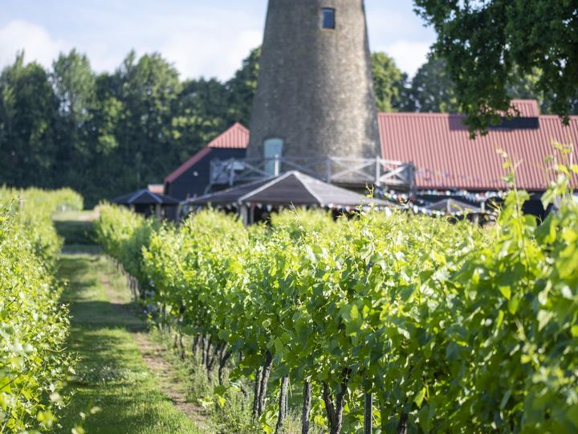
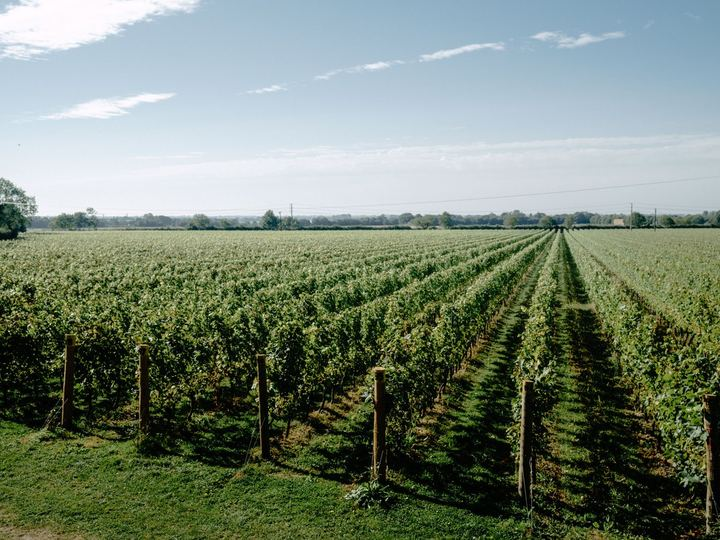
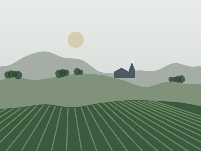

8 vineyards
Horsham & the Arun Valley
Nyetimber, Bolney Wine Estate and Nutbourne Vineyard and 5 more
Stations Pulborough, Haywards Heath, Billingshurst and Hassocks
Sussex wine country
Seven routes through Sussex wine country, from the Rother Wine Triangle near Rye to Chichester and Petworth in the west. Each trail lists every estate, the nearest stations, and where you can eat and stay.

8 vineyards
Nyetimber, Bolney Wine Estate and Nutbourne Vineyard and 5 more
Stations Pulborough, Haywards Heath, Billingshurst and Hassocks
 Illustration
Illustration7 vineyards
Oxney Organic Estate, Tillingham Estate and Oastbrook Estate and 4 more
Stations Rye, Robertsbridge, Battle and Hastings

7 vineyards
Rathfinny Wine Estate, Bluebell Vineyard Estate and Beacon Down Vineyard and 4 more
Stations Seaford, Haywards Heath, Uckfield and Wadhurst

5 vineyards
Tinwood Estate, Ashling Park Estate and Roebuck Estates and 2 more
Stations Chichester, Nutbourne, Pulborough and Haslemere

5 vineyards
Ridgeview Wine Estate, Artelium Wine Estate and Highweald Wine Estate and 2 more
Stations Burgess Hill, Plumpton, Haywards Heath and Hassocks

Illustration3 vineyards
Kingscote Estate, Busi Jacobsohn Wine Estate and Wildwood Vineyard
Stations East Grinstead and Eridge

2 vineyards
We group all 37 visitor-friendly Sussex vineyards into seven trails: Horsham & the Arun Valley, The Rother Wine Triangle, The Wealden Wine Trail, Chichester & Petworth, Haywards Heath & Ditchling, East Grinstead, Tunbridge Wells & the High Weald and Worthing & the Downs.
Horsham & the Arun Valley, with 8 estates.
The Rother Wine Triangle, where 6 of the 7 estates have rooms, lodges or cottages.
Yes. Every trail page lists the nearest station for each estate, and our by-train guide groups all 37 vineyards by station.
The best vineyard days out, straight to your inbox
One useful weekly email with vineyard openings, seasonal events, new verified details and a countryside day worth saving.